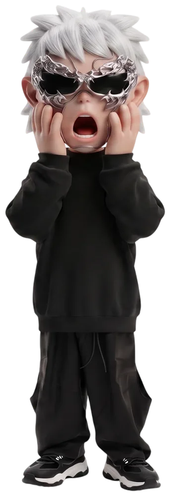

4

4Такой страницы нет
Ссылка устарела или в адресе опечатка. Сам в шоке — но с сайтом всё в порядке, просто эта страница не существует.

4Ссылка устарела или в адресе опечатка. Сам в шоке — но с сайтом всё в порядке, просто эта страница не существует.